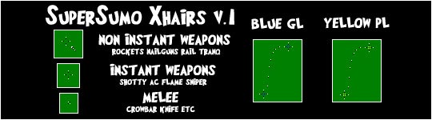

| [ Crosshairs | HUDs | Misc ] |
 |
| Sumo Xhairs v.4b - Download |
|
| These crosshairs are based off my version 4 crosshairs. I fattened them up a little bit to make them easier to see in steam. Steam makes crosshairs blurry, so my version 4 crosshairs are hard to see. |
| I also changed up the autorifle and the super nailgun a little bit. I didn't really like the design of the super nailgun, so I changed it to what the autorifle used to be, and changed the autorifle's middle to a dot instead of a cross. I like the change. :) |
|
| Sumo Xhairs v.4 - Download |
|
| I got bored of using the same crosshair for most of my stuff, so I decided to make a new set up crosshairs, this time with some variety. I decided to go minimalistic again. (Aim small, miss small). I made some improvements to the pl and gl crosshairs, so those are worth checking out if you don't like the others. |
|
| Sumo Xhairs v.3 - Download |
|
| These are the updated version of the infamous Sumo Xhairs v.2. I like these better, because I think they are easier to see. Included in the zip are many different colors. If you want to choose one, instructions on how to do so are in the readme. |
|
| Sumo Xhairs v.2 - Download |
|
| This is the second version of my crosshair set. The demo xhairs in this set are regarded as some of the best by many people. So, if you, like myself, suck at demo, you should give these a try. They have improved my blue pipe accuracy immensly. I like the other xhairs in the set also, but many people stick with what they already have. |
|
| Sumo Xhairs v.1 - Download |
|  |
| The first version of my crosshairs. I got tired of the defaults and all the other custom xhairs at the time were too big and bulky, so I made these. You can see them against any texture, and they are very simplistic, which is what I like. They aren't distracting, but some find them hard to keep track of. They, and all the versions after, were made for 1024x768 resolution, so I don't know if they will work for any other. |
|
| SuperSumo's Allstar TFC Crosshair Pack - Download |
|
| This is what I think is the best of the bunch. Of all the crosshairs I've seen, I think these are the least annoying, most useful, and just overall best of them. I have asked other people what they think are the best, and they have come up with these also, so I don't think my opinion is too biased towards my own crosshairs being included. I only made the pl, gl, and melee crosshairs, and I don't really know who made the others. If someone wants to fill me in, that would be great. |
|